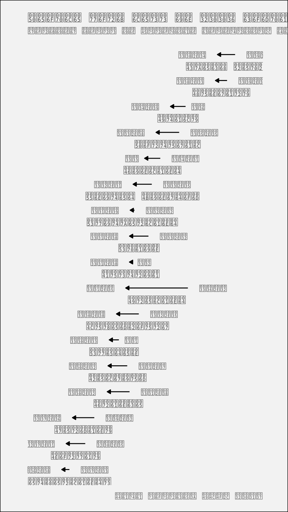

library(dplyr)
library(ggplot2)
library(forcats)The reduction in weekly working hours in Europe
Looking at the development between 1996 and 2006
Summary
The International Labour Organization (ILO) has many data sets on working conditions. For example, one can look at how weekly working hours have been decreasing in many countries of the world, while monetary compensation has risen. In this report, the reduction in weekly working hours in European countries is analysed, and a comparison between 1996 and 2006 is made. All analysed countries have seen a decrease in weekly working hours since 1996 – some more than others.
Preparations
Analysis
Data
The herein used data can be found in the statistics database of the ILO. For the purpose of this course, it has been slightly preprocessed.
load(url("http://s3.amazonaws.com/assets.datacamp.com/production/course_5807/datasets/ilo_data.RData"))The loaded data contains 380 rows.
# Some summary statistics
ilo_data %>%
group_by(year) %>%
summarize(mean_hourly_compensation = mean(hourly_compensation),
mean_working_hours = mean(working_hours))# A tibble: 27 × 3
year mean_hourly_compensation mean_working_hours
<fct> <dbl> <dbl>
1 1980 9.27 34.0
2 1981 8.69 33.6
3 1982 8.36 33.5
4 1983 7.81 33.9
5 1984 7.54 33.7
6 1985 7.79 33.7
7 1986 9.70 34.0
8 1987 12.1 33.6
9 1988 13.2 33.7
10 1989 13.1 33.5
# … with 17 more rows # pipe the above data frame into the knitr::kable functionAs can be seen from the above table, the average weekly working hours of European countries have been decreasing since 1980.
Preprocessing
The data is now filtered so it only contains the years 1996 and 2006 – a good time range for comparison.
ilo_data <- ilo_data %>%
filter(year == "1996" | year == "2006")
# Reorder country factor levels
ilo_data <- ilo_data %>%
# Arrange data frame first, so last is always 2006
arrange(year) %>%
# Use the fct_reorder function inside mutate to reorder countries by working hours in 2006
mutate(country = fct_reorder(country,
working_hours,
last))Results
In the following, a plot that shows the reduction of weekly working hours from 1996 to 2006 in each country is produced.
First, a custom theme is defined.
Then, the plot is produced.
# Compute temporary data set for optimal label placement
median_working_hours <- ilo_data %>%
group_by(country) %>%
summarize(median_working_hours_per_country = median(working_hours)) %>%
ungroup()
# Have a look at the structure of this data set
str(median_working_hours)tibble [17 × 2] (S3: tbl_df/tbl/data.frame)
$ country : Factor w/ 30 levels "Netherlands",..: 1 2 3 4 5 6 7 8 9 10 ...
$ median_working_hours_per_country: num [1:17] 27 27.8 28.4 31 30.9 ...# Plot
ggplot(ilo_data) +
geom_path(aes(x = working_hours, y = country),
arrow = arrow(length = unit(1.5, "mm"), type = "closed")) +
# Add labels for values (both 1996 and 2006)
geom_text(
aes(x = working_hours,
y = country,
label = round(working_hours, 1),
hjust = ifelse(year == "2006", 1.4, -0.4)
),
# Change the appearance of the text
size = 3,
family = "Bookman",
color = "gray25"
) +
# Add labels for country
geom_text(data = median_working_hours,
aes(y = country,
x = median_working_hours_per_country,
label = country),
vjust = 2,
family = "Bookman",
color = "gray25") +
# Add titles
labs(
title = "People work less in 2006 compared to 1996",
subtitle = "Working hours in European countries, development since 1996",
caption = "Data source: ILO, 2017"
) +
# Apply your theme
theme_ilo() +
# Remove axes and grids
theme(
axis.ticks = element_blank(),
axis.title = element_blank(),
axis.text = element_blank(),
panel.grid = element_blank(),
# Also, let's reduce the font size of the subtitle
plot.subtitle = element_text(size = 9)
) +
# Reset coordinate system
coord_cartesian(xlim = c(25, 41))
An interesting correlation
The results of another analysis are shown here, even though they cannot be reproduced with the data at hand.

As you can see, there’s also an interesting relationship. The more people work, the less compensation they seem to receive, which seems kind of unfair. This is quite possibly related to other proxy variables like overall economic stability and performance of a country.